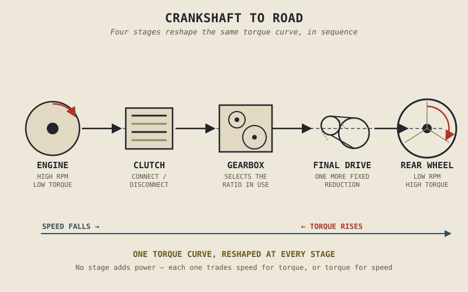

An engine idling at a stoplight is spinning, often somewhere around a thousand times a minute, while the motorcycle underneath it is going nowhere at all. Rev that same engine to redline in first gear and the bike accelerates hard; hold that identical RPM in top gear and it cruises comfortably at highway speed. The engine hasn't changed. Its torque curve, the one Chapter 2.12 spent a full chapter explaining, is exactly the same curve in every one of those situations. Something between the crankshaft and the road is doing an enormous amount of quiet, essential work — and Part II never once had to explain what it was.
Chapter 2.21 closed Part II by admitting plainly that an engine's torque, on its own, cannot move a motorcycle down a road. This chapter opens Part III by explaining exactly why not, and what has to exist between the engine and the wheel to fix that.
Two Problems the Engine Alone Cannot Solve
An engine has two structural limitations that have nothing to do with anything covered in Part II, and both would make it useless connected directly to a wheel with nothing in between. First, an engine cannot run happily all the way down to zero RPM — below a certain speed it simply stalls, yet a stationary motorcycle's rear wheel is, by definition, at zero. Something has to be able to connect a running engine to a stationary wheel smoothly, and just as importantly, disconnect them completely so the engine can keep idling while the bike sits still. That's the clutch's entire job, and Chapter 3.2 covers it in full.
Second, and more subtly, Chapter 2.12 already showed that an engine only produces strong torque and reasonable efficiency across a specific, fairly narrow band of its rev range — nowhere near broad enough to cover everything from a standing start to full highway speed through a single, fixed connection to the wheel. A gearbox exists to solve exactly this problem: by changing the effective ratio between engine rotation and wheel rotation as road speed increases, it keeps the engine operating somewhere near the strong, efficient portion of the torque curve Chapter 2.12 described, at every speed the bike travels, rather than forcing one single ratio to cover a road speed range the engine's own torque curve was never suited to handle alone.
The Whole Chain, End to End
Put together, the path from crankshaft to road runs through three distinct stages, each with its own chapter ahead in this part. The clutch, covered in Chapter 3.2, connects and disconnects engine rotation from the rest of the drivetrain, smoothly enough to launch from a stop without stalling. The gearbox, covered across Chapter 3.3 through Chapter 3.5, offers a selection of different ratios between engine speed and gearbox output speed, letting the rider choose which portion of the engine's torque curve is currently doing the work. The final drive, covered in Chapter 3.6, applies one more fixed reduction — via chain, belt, or shaft — between the gearbox's output and the rear wheel itself, an overall multiplier layered on top of whatever ratio the gearbox is currently in.
The engine produces one torque curve. By the time that curve reaches the rear wheel, the clutch, the gearbox, and the final drive have each had a chance to reshape it — the same curve, put through three completely different mechanical lenses depending on gear and final drive ratio.

A simple flow diagram — engine, clutch, gearbox, final drive, rear wheel — showing torque and speed being reshaped at each stage between the crankshaft and the road.
A Common Misconception, Cleared Up Early
It's tempting to think of a gearbox as something that adds power, the way a supercharger or a bigger throttle body might — shifting to a lower gear feels like the bike suddenly has more strength, so it's natural to assume more strength is being created. Nothing is being created. Chapter 2.19 already established, in the strictest possible terms, exactly how much energy an engine's fuel actually produces, and no transmission, however cleverly designed, adds a single joule to that total. A gearbox is a lever system, not an amplifier: lower gears trade road speed for torque multiplication at the wheel, higher gears trade torque for road speed, and the underlying power available from the engine at a given RPM, the same power curve Chapter 2.12 described, is simply being delivered to the wheel through a different mechanical ratio each time. If anything, every gear, chain, belt, and bearing in this chain introduces a small amount of additional friction loss, on top of everything Chapter 2.19 already accounted for inside the engine itself — the transmission redistributes torque and speed, and in doing so, costs a little energy rather than adding any.
Where This Leads
This chapter named the whole chain from crankshaft to road; the rest of Part III walks through it stage by stage. Chapter 3.2 starts at the beginning of that chain, with the clutch — the component solving the very first problem this chapter raised: how to connect a running engine to a stationary wheel without either stalling the engine or breaking something in the process.
Key Concepts to Remember
- An engine cannot run down to zero RPM and cannot produce strong, efficient torque across its entire rev range through a single fixed connection to the wheel — two structural limitations the transmission exists specifically to solve.
- The clutch connects and disconnects engine rotation from the drivetrain; the gearbox selects which portion of the engine's torque curve is currently in use; the final drive applies one further fixed reduction to the rear wheel.
- The engine's torque curve, described fully in Chapter 2.12, is reshaped at each stage of this chain, but never changed at its source — the same curve, delivered through different mechanical ratios.
- A transmission does not add power or energy to the system; it trades torque for speed or speed for torque, and every stage in the chain introduces some additional friction loss on top of what Chapter 2.19 already accounted for.
Cross-References
| ← Ch. 2.21 | Closed Part II by stating that engine torque alone cannot move a motorcycle; this chapter explains precisely why not. |
| ← Ch. 2.12 | Established the engine's torque curve; this chapter explains how the transmission reshapes that curve without altering its source. |
| ← Ch. 2.19 | Established exactly how much energy an engine's fuel produces; this chapter applies that same accounting to rule out the idea that a transmission creates power. |
| → Ch. 3.2 | Covers the clutch, the first stage in the chain this chapter introduced. |